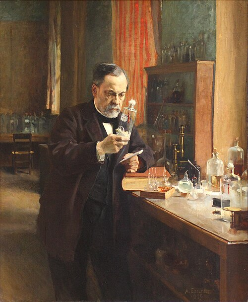
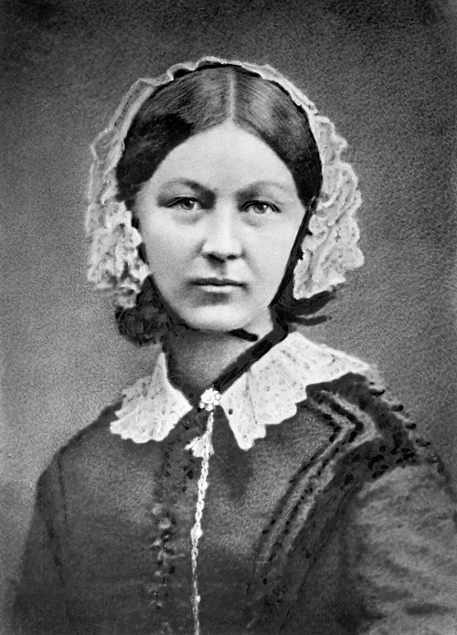

Edexcel Specification: c1250–c1500
- 1. Causes of disease: Supernatural/religious explanations, Astrology, Four Humours, and Miasma.
- 2. Prevention and treatment: Religious actions, bloodletting, purging, purifying air.
- 3. Medical care: The role of physicians, apothecaries, barber surgeons, and hospitals.
- 4. Case Study: The Black Death (1348): Beliefs about its causes, treatments, and prevention.
Meoncross School | History Department
18th & 19th C
Paper 1: Medicine Through Time with the Western Front
Teacher Workbook - Scholar:
Class:
Teacher:
Unit Checklist Tracker
| Lesson Title / Exam Task |
Page |
Do Now |
Tasks |
Review |
Score |
| L1: KT3.1: What breakthrough discoveries changed our understanding of disease causes? | 3 | / 10 | 〇 | | |
| Exam Question: | | N/A | O | | |
| L2: KT3.2: How did the Industrial Revolution transform prevention and treatment? | 6 | / 10 | 〇 | | |
| Exam Question: | | N/A | O | | |
| L3: KT3.3: How significant were Edward Jenner and John Snow? | 10 | / 10 | 〇 | | |
| Exam Question: | | N/A | O | | |
L1: KT3.1: What breakthrough discoveries changed our understanding of disease causes?
(See Textbook Page 3)
Learning Objectives
Explain the difference between Spontaneous Generation and Germ Theory.
Analyze the significance of Robert Koch's scientific methodology in microbiology.
In the 18th and 19th centuries, the Industrial Revolution created overcrowded, dirty cities, making epidemic diseases a massive threat. While scientists had finally discarded ancient beliefs like the Four Humours, they incorrectly assumed that rotting dirt created the germs they could now see under microscopes. However, the brilliant experiments of Louis Pasteur and Robert Koch finally solved the mystery of illness, moving medicine into a truly scientific era.
Did you know?
- 1861: The year the French chemist Louis Pasteur published his Germ Theory, proving microbes in the air cause decay.
- 1882: The year the German doctor Robert Koch successfully identified the specific microbe that caused tuberculosis (TB).
- Spontaneous Generation: The incorrect 18th-century medical theory that rotting matter naturally created microbes, which Pasteur finally proved wrong.
Do Now Activity
Score: / 10
1. What did William Harvey discover about the human body?
2. What did Harvey prove wrong about Galen's theories of blood?
3. In what year did the Great Plague hit London?
4. What was 'Spontaneous Generation'?
5. Who published the Germ Theory in 1861?
6. What did Robert Koch contribute to Germ Theory?
7. Who wrote 'On the Fabric of the Human Body' (1543)?
8. What invention helped spread new medical ideas during the Renaissance?
9. Why did many doctors reject Germ Theory at first?
10. What method did Robert Koch use to isolate and photograph bacteria?
Vocabulary Check
Fill in the blanks using the vocabulary words below.
Germ Theory | Spontaneous Generation | Bacteriology
In nineteenth-century Britain, doctors struggled to agree on the causes of disease. Before Pasteur's breakthrough, the prevailing belief was [ . . . . . . . . ] , which claimed that microbes were simply created by decaying matter. However, Pasteur's publication of [ . . . . . . . . ] in 1861 proved that airborne microbes caused decay and illness. This laid the foundation for the new science of [ . . . . . . . . ] , led by Robert Koch, who developed scientific methods to isolate and stain specific bacteria under powerful microscopes.
Source A: Pasteur in the Lab

Louis Pasteur working in his laboratory to prove Germ Theory.
The Germ Theory
For centuries, people believed in 'Spontaneous Generation'-the idea that rotting matter naturally created maggots and microbes. In 1861, a French chemist named Louis Pasteur published his brilliant 'Germ Theory'. By conducting experiments with swan-necked flasks, he proved that microbes in the air were causing decay, completely destroying the theory of spontaneous generation.
A German doctor, Robert Koch, then took Pasteur's work a massive step further. Koch discovered how to stain and grow bacteria in a petri dish, and successfully identified the specific microbes that caused tuberculosis (1882) and cholera (1883). Koch's work was revolutionary because it proved that specific diseases were caused by specific microbes, earning him the title of the 'Father of Bacteriology'.
Louis Pasteur
Robert Koch
Continuity and Change: Spontaneous Generation and Miasma
By 1700, the Theory of the Four Humours had been entirely discarded by scientists, but miasma (bad air) remained the most popular explanation for disease, especially in the smelly new industrial slums.
With the improvement of microscopes, scientists could finally see tiny microbes present on decaying matter.
This led to the theory of Spontaneous Generation-the incorrect belief that rotting matter naturally created these microbes, rather than the microbes causing the rotting.
In Britain, powerful doctors like Dr Henry Bastian actively promoted Spontaneous Generation until the 1870s, refusing to believe germs caused human disease. Because doctors incorrectly believed microbes were the result of decay rather than the cause of it, they did not see the need to kill them or protect patients from them, severely delaying medical progress.
Q1. Identify the scientist who published the Germ Theory in 1861.
Louis Pasteur and Germ Theory (1861)
In 1861, the French chemist Louis Pasteur published his Germ Theory, proving that microbes in the air caused decay.
He used a famous swan-neck flask experiment to prove that sterilized liquid stays entirely fresh if air (and the germs within it) is blocked from entering.
Pasteur proved that Spontaneous Generation was entirely wrong: microbes are not created by rotting matter; they exist in the air and cause the decay. In 1878, he published his germ theory of infection, stating germs also caused human diseases. Germ Theory was a monumental turning point because it provided the first scientific proof that external microbes, not spontaneous generation or miasma, were responsible for decay and infection, laying the foundation for modern bacteriology.
Knowledge Check (Q3)
How did Pasteur's swan-neck flask experiment disprove the theory of spontaneous generation?
- A. It showed that liquids only decayed when exposed to airborne microbes, proving that microbes caused decay (not the other way around).
- B. It proved that microbes were killed by intense cold.
- C. It showed that diseases were spread by physical contact.
- D. It proved that microbes spontaneously appeared in a vacuum.
Q2. Describe what Spontaneous Generation was.
Robert Koch and Microbe Hunting
Robert Koch, a German doctor, built upon Pasteur's work by successfully identifying the specific microbes that caused individual human diseases.
He famously identified the tuberculosis (TB) microbe in 1882 and the cholera microbe in 1883 (finally proving John Snow's earlier theories about dirty water).
Koch developed vital new scientific methods: he grew pure cultures of bacteria using solid agar jelly (derived from seaweed) in a petri dish, and used synthetic aniline dyes to stain the transparent bacteria so they could easily be seen and photographed under a microscope. Koch's methods completely transformed diagnosis; by proving that specific bacteria caused specific diseases, he enabled a generation of 'microbe hunters' to track down diseases and eventually develop targeted chemical cures and vaccines.
Q4. Explain how Robert Koch developed Pasteur's work.
Q5. Evaluate the significance of the Germ Theory on the history of medicine.
John Snow
Documentary / General Notes
Title / Topic: [ . . . . . . . . ][ . . . . . . . . ][ . . . . . . . . ][ . . . . . . . . ][ . . . . . . . . ][ . . . . . . . . ]__
Pair & Share Activity
Q6. Prompt: Which was more significant in transforming British medicine: Louis Pasteur's theoretical proof of Germ Theory in 1861, or Robert Koch's practical scientific methods to identify specific disease-causing microbes in the 1870s and 1880s?
Think: Jot down your choice and one piece of evidence from the sources (e.g., Pasteur disproving spontaneous generation and providing the core principles, vs. Koch growing bacteria on agar jelly, staining them with dyes, and finding the TB and cholera microbes).
Historian's Corner: The Debate over the Pace of the Germ Theory Revolution
Historians actively debate how quickly Germ Theory transformed medical beliefs in Britain. While traditional narratives present Pasteur's 1861 publication as an overnight revolution that instantly swept away ancient superstitions, modern revisionist historians argue that the transition was incredibly slow and highly contested. They point out that Pasteur was a chemist, not a doctor, and his early work focused on wine and vinegar, leading prominent British medical authorities like Dr. Henry Bastian to reject his ideas for decades. It was only after Robert Koch identified specific human pathogens (such as the tuberculosis microbe in 1882) and developed practical laboratory techniques that the wider medical community gradually accepted the link between germs and disease.
Exam Practice
Q7. 'Louis Pasteur's publication of the Germ Theory was the biggest turning point in understanding the causes of disease.' How far do you agree? Explain your answer. (16 marks) You may use the following in your answer:
• spontaneous generation
• Robert Koch
You must also use information of your own.
Exam Practice
Q8. Explain why Louis Pasteur's Germ Theory (1861) was a major turning point in medicine. (12 marks)
Q9. Explain one way in which ideas about the cause of illness in the period c1700-c1900 were different from ideas about the cause of illness in the period c1500-c1700. (4 marks)
Exam Practice
1. 'Louis Pasteur's publication of the Germ Theory was the biggest turning point in understanding the causes of disease.' How far do you agree? Explain your answer. (16 marks)
You may use the following in your answer:
- Spontaneous Generation
- Robert Koch
You must also use information of your own.
L2: KT3.2: How did the Industrial Revolution transform prevention and treatment?
(See Textbook Page 6)
Learning Objectives
Explain how hospital care and nursing standards were transformed c1700-c1900 under the influence of Florence Nightingale.
Analyse how the breakthroughs of anaesthetics and antiseptics solved the critical surgical problems of pain and infection.
Evaluate the role of government intervention in disease prevention through the 1875 Public Health Act.
The 19th century witnessed a dramatic revolution in how society treated the sick and prevented disease. Driven by the devastating impact of industrial slums and the breakthrough of Germ Theory, the government finally abandoned its 'laissez-faire' attitude to enforce public health. Simultaneously, brilliant pioneers transformed terrifying, deadly hospitals and surgical theatres into clean, scientific environments, drastically improving the chances of human survival.
Did you know?
- 15%: The dramatically reduced surgical death rate achieved by Joseph Lister between 1867-1870 after he introduced carbolic acid antiseptics.
- 1875: The year the British government passed the compulsory Public Health Act, finally forcing local councils to provide clean water and sewers.
- 1885: The year Louis Pasteur successfully developed the rabies vaccine, the first scientifically manufactured human vaccination.
Do Now Activity
Score: / 10
1. What was 'Spontaneous Generation'?
2. Who published the Germ Theory in 1861?
3. What did Robert Koch contribute to Germ Theory?
4. Who was Florence Nightingale?
5. What did Florence Nightingale believe caused disease?
6. Which anesthetic was discovered by James Simpson in 1847?
7. What did William Harvey discover about the human body?
8. Who was Thomas Sydenham?
9. Why did the 'Black Period of Surgery' occur after the discovery of anesthetics?
10. Who introduced antiseptic surgery using carbolic acid in 1865?
Vocabulary Check
Write a historically accurate sentence connecting two terms from the glossary box below.
Laissez-faire | Aseptic surgery | Compulsory
Your Sentence:
Source A: Florence Nightingale

Florence Nightingale tending to patients in the clean wards she established at Scutari.
Surgery in the Industrial Era
In the early 1800s, surgery was horrific. Surgeons had to work incredibly fast because there was no pain relief, and patients often died from shock. Furthermore, operating theatres were filthy, meaning patients who survived the pain almost always died from post-operative infections like gangrene.
This changed drastically with two major discoveries. In 1847, James Simpson discovered Chloroform, providing the first effective anaesthetic that completely knocked patients out. Then, in 1865, Joseph Lister read Pasteur's Germ Theory and realized that microbes were causing surgical infections. He began using Carbolic Acid spray to kill germs in the operating theatre (antiseptic surgery), which caused death rates to plummet from 46% to just 15%.
James Simpson
Joseph Lister
Improvements in Hospital Care: Florence Nightingale
During the Crimean War (1853-56), Florence Nightingale transformed the dreadful conditions in military hospitals by enforcing strict cleanliness, ventilation, and good food.
She famously used statistical diagrams, such as her 'Cause of Mortality in the Army in the East', to successfully persuade the government that a desperate change was needed in medical care.
Following her return from the war, Nightingale's massive popularity allowed her to have a major impact on civilian healthcare in two ways: establishing formal, professional training for nurses, and completely redesigning hospital layouts using the 'Pavilion Style' (which featured long wards, high ceilings, large windows for ventilation, and separate wings to isolate infections). Nightingale's relentless focus on hygiene and training transformed nursing into a respected profession, drastically reducing hospital death rates. (Common Misconception: Students often confuse 'cause' and 'treatment'. You must strictly categorize Nightingale and Lister under 'treatments and care', reserving Germ Theory for the 'causes of illness'.)
Knowledge Check (Q2)
How did Florence Nightingale's 'Notes on Nursing' (1859) help to improve the survival rates of patients in British hospitals?
- A. It taught nurses how to perform complex internal surgery.
- B. It established strict protocols for hygiene, ventilation, and cleanliness, drastically reducing infection rates.
- C. It proved that germs caused disease and taught nurses how to use carbolic acid.
- D. It taught nurses how to discover new antibiotics.
Q1. Identify the first effective anaesthetic discovered in 1847.
Florence Nightingale
The Impact of Anaesthetics and Antiseptics on Surgery
Before the 1840s, surgery was agonising and incredibly dangerous. (Outside information: In 1847, James Simpson discovered chloroform, a highly effective anaesthetic that completely knocked patients out, solving the problem of surgical pain.)
However, pain-free surgery initially led to the 'Black Period' of surgery (1847-1870). Because patients were unconscious, surgeons attempted deeper, more complex internal operations. Since they did not yet know about germs, they operated in filthy clothes with unwashed hands and unsterilized instruments, carrying deadly pathogens deep into open wounds, which caused death rates to temporarily skyrocket.
Building entirely on Louis Pasteur's Germ Theory (1861), the British surgeon Joseph Lister developed the first effective antiseptic by spraying carbolic acid onto wounds and surgical instruments.
This breakthrough caused the surgical survival rate to skyrocket; the death rate plummeted from 46% (pre-antiseptic, 1864-1866) down to just 15% (post-antiseptic, 1867-1870). The combination of anaesthetics and antiseptics completely revolutionized surgery, turning it from a terrifying, last-resort gamble into a safe, routine method of curing deep internal injuries.
Q3. Describe the state of surgery before 1847.
New Approaches to Prevention: Vaccinations
(Outside information: In 1796, Edward Jenner proved that infecting someone with mild cowpox provided immunity to the deadly disease smallpox, creating the world's first vaccination.)
Building on his own Germ Theory, Louis Pasteur eventually managed to artificially create weakened strains of bacteria in a laboratory.
In 1885, Pasteur successfully developed the rabies vaccine. This was the very first scientific human vaccination created since Edward Jenner's work almost a century earlier. Pasteur's discovery was a monumental breakthrough because it proved that vaccines could be artificially manufactured in a lab to prevent a wide variety of diseases, rather than just relying on lucky natural occurrences like cowpox.
Q4. Explain how Joseph Lister solved the problem of infection.
Edward Jenner
The Public Health Acts (1848 and 1875)
The rapid growth of industrial factories forced workers into overcrowded slums with shared outdoor toilets, filthy streets, and no clean water, creating a perfect environment for epidemic diseases like cholera (which killed 53,293 people in the 1848-49 outbreak alone).
Initially, the government's response was a laissez-faire failure. The 1848 Public Health Act only created a national Board of Health and made local improvements optional; most local councils simply refused to spend money on cleaning up their filthy towns.
Following the undeniable scientific proof provided by John Snow (mapping cholera to a water pump in 1854) and Pasteur's Germ Theory (1861), the government was finally forced to take permanent action.
The 1875 Public Health Act was a massive turning point; it made it legally compulsory for all local councils to provide piped clean water, manage sewage disposal, maintain street lighting, and appoint a Medical Officer of Health. The 1875 Act marked the definitive end of government non-interference in public health, proving that the state finally accepted responsibility for keeping the poorest members of society safe from preventable diseases.
Q5. To what extent did Simpson's discovery of Chloroform immediately improve surgery?
Documentary / General Notes
Title / Topic: [ . . . . . . . . ][ . . . . . . . . ][ . . . . . . . . ][ . . . . . . . . ][ . . . . . . . . ][ . . . . . . . . ]__
Pair & Share Activity
Q6. Prompt: Was the introduction of anaesthetics (James Simpson's Chloroform) or antiseptics (Joseph Lister's Carbolic Acid) a more significant turning point for patients undergoing surgery in the 19th century?
Think: Jot down your choice and one piece of evidence (e.g., Chloroform solved patient pain but initially led to the 'Black Period' of higher death rates, while Carbolic Acid solved postoperative infection and dropped mortality rates from 46% to 15% but relied on Pasteur's Germ Theory).
Historian's Corner: The Debate over the 'Black Period' of Surgery
Historians frequently debate the immediate consequences of James Simpson's 1847 discovery of chloroform. While popular history often celebrates chloroform as an overnight triumph that ended the horror of conscious amputations, medical historians point out that it ushered in a devastating 'Black Period' for British surgery. Because patients were unconscious and relaxed, surgeons attempted far deeper, more complex, and longer internal operations. However, because Lister's carbolic antiseptics were not introduced until 1865, surgeons still operated in filthy environments with unwashed hands and blood-stained coats. As a result, the 'Black Period' actually saw a dramatic increase in postoperative deaths from gangrene and infection, leading some historians to argue that the discovery of anaesthetics was a step backward for patient survival until antiseptics were finally developed.
Exam Practice
Q7. 'The discovery of Carbolic Acid was the most significant turning point in surgery in the years c1700-c1900.' How far do you agree? Explain your answer. (16 marks + 4 marks for SPaG)
Exam Practice
Q8. Explain why Joseph Lister's development of carbolic acid was so significant in the history of surgery. (12 marks)
Q9. Explain one way in which surgical treatments in the period c1700-c1900 were different from surgical treatments in the medieval period (c1250-c1500). (4 marks)
Exam Practice
1. 'The discovery of Carbolic Acid was the most significant turning point in surgery in the years c1700-c1900.' How far do you agree? Explain your answer. (16 marks + 4 marks for SPaG) (16 marks)
You may use the following in your answer:
You must also use information of your own.
L3: KT3.3: How significant were Edward Jenner and John Snow?
(See Textbook Page 10)
Learning Objectives
Explain the significance and limitations of Edward Jenner's development of the smallpox vaccine.
Analyze how John Snow investigated the 1854 cholera epidemic and assess the significance of his findings.
The 18th and 19th centuries witnessed two monumental breakthroughs in the prevention of deadly diseases. Edward Jenner's pioneering smallpox vaccination provided the world's first scientifically tested method of immunity, saving millions globally. Decades later, John Snow's brilliant, logical investigation into cholera proved that lethal epidemics were water-borne, fundamentally shattering the ancient miasma theory. Together, these two men laid the vital foundations for modern public health and immunology.
Did you know?
- 1796: The year Edward Jenner successfully tested the first smallpox vaccination on young James Phipps using cowpox.
- 1852: The year the British government officially made the smallpox vaccination compulsory.
- 1854: The year John Snow mapped the devastating cholera outbreak in Soho, London, proving it was spread by the Broad Street water pump.
Do Now Activity
Score: / 10
1. Who was Florence Nightingale?
2. What did Florence Nightingale believe caused disease?
3. Which anesthetic was discovered by James Simpson in 1847?
4. What disease did Edward Jenner vaccine against in 1796?
5. What did Edward Jenner observe that led to his vaccine?
6. Who discovered the cause of cholera in 1854?
7. In what year did the Black Death arrive in England?
8. What did Vesalius prove about Galen's anatomical ideas?
9. How did John Snow prove that cholera was spread by contaminated water?
10. What was the significance of the Public Health Act of 1875?
Vocabulary Check
Write a clear definition and a historically accurate sentence for the term: Inoculation
Source A: The Broad Street Pump
John Snow's map showing deaths centered around the Broad Street pump.
Public Health and Prevention
In 1796, Edward Jenner made a massive breakthrough in prevention by developing the first vaccine. He noticed that milkmaids who caught cowpox never caught the deadly disease smallpox. He proved this by infecting a young boy with cowpox, and then smallpox, and the boy survived. However, Jenner didn't know why it worked because germs hadn't been discovered yet.
Meanwhile, British cities during the Industrial Revolution were filthy and disease-ridden. In 1854, during a massive cholera outbreak, Dr. John Snow mapped the deaths in Soho, London, and proved that the victims were all drinking from the Broad Street water pump. He removed the pump handle and the deaths stopped, proving that cholera was a water-borne disease, not caused by miasma. This eventually forced the government to pass the 1875 Public Health Act, compelling cities to build sewers and provide clean water.
The Threat of Smallpox and Inoculation
Before the 19th century, smallpox was a terrifying, highly contagious disease that killed thousands of adults and children every year in Britain.
The only prevention was inoculation-deliberately rubbing pus from a live, active smallpox scab into a healthy person's cut so they caught a mild dose and became immune. (Crucial Distinction: Never confuse inoculation and vaccination! Inoculation used dangerous, active smallpox scabs with a high risk of triggering a fatal epidemic, whereas Jenner's vaccination used the much milder, safer cowpox virus.)
Because inoculation was highly dangerous, expensive, and deeply flawed, smallpox remained a massive, uncontrolled threat to the population, creating a desperate need for a safer alternative.
Q1. Identify the disease Edward Jenner created a vaccine for.
Edward Jenner and the First Vaccination (1796)
Edward Jenner, a country doctor in Gloucestershire, observed that local dairy maids who caught the mild animal disease cowpox never seemed to catch the deadly smallpox.
In 1796, he tested his theory by deliberately infecting an eight-year-old boy, James Phipps, with cowpox, and later exposing him to smallpox; the boy did not fall ill.
In 1798, Jenner published his detailed scientific findings, calling the technique 'vaccination' after vacca, the Latin word for cow. Jenner's rigorous experiments provided the world with its first safe, effective method of preventing disease without causing an outbreak, eventually leading the government to make it compulsory in 1852.
Q2. Describe how Jenner proved his vaccine worked.
Opposition to Jenner's Discovery
Despite its massive success, Jenner faced fierce opposition. The Church argued that using an animal disease to treat humans went against God's will.
Wealthy inoculators (like Thomas Dimsdale) used their power and money to print negative propaganda against vaccinations because they were terrified of losing their highly profitable businesses.
Crucially, because Pasteur's Germ Theory (1861) had not yet been published, Jenner could not scientifically explain why cowpox worked, making many traditional doctors suspicious. The powerful opposition meant that it took decades for the vaccination to be fully accepted by the British public and the Royal Society, highlighting how difficult it was to change medical attitudes without a complete scientific understanding of germs.
Q3. Explain the actions John Snow took during the 1854 Cholera outbreak.
The Terrifying Threat of Cholera (1854)
Cholera arrived in Britain in 1831. It was a terrifying, fast-acting disease that caused severe diarrhoea and dehydration, turning victims' skin blue before killing them in a matter of days.
During the massive epidemic of 1854, both the government and the public still firmly believed the disease was spread by miasma (bad air) coming from the rotting slums. Because the authorities completely misunderstood what caused the disease, their desperate attempts to prevent it-such as burning barrels of tar in the streets to purify the air-were entirely useless and thousands continued to die.
Q4. Evaluate the significance of the 1875 Public Health Act.
John Snow and the Broad Street Pump
John Snow, a highly respected London surgeon, noticed that cholera affected the gut rather than the lungs, making him doubt the miasma theory.
When a massive outbreak hit Soho in August 1854, Snow mapped all the local deaths and proved they were clustered around a single water pump on Broad Street.
He famously removed the handle from the pump, and the local cholera outbreak stopped immediately. It was later discovered that a leaking cesspit had cracked and was pouring raw sewage directly into the well. Snow's brilliantly logical investigation provided the first undeniable, practical evidence that cholera was water-borne, placing massive pressure on the government to finally build a clean, modern sewer system for London.
Knowledge Check (Q5)
How did John Snow prove that cholera was a waterborne disease in 1854, long before the discovery of germs?
- A. By looking at the cholera bacteria under a microscope.
- B. By mapping the deaths around the Broad Street pump, proving the victims shared a water source rather than breathing the same 'bad air'.
- C. By boiling all the water in London and watching the disease disappear.
- D. By injecting a cholera vaccine into local residents.
Documentary / General Notes
Title / Topic: [ . . . . . . . . ][ . . . . . . . . ][ . . . . . . . . ][ . . . . . . . . ][ . . . . . . . . ][ . . . . . . . . ]__
Pair & Share Activity
Q6. Prompt: Whose breakthrough was a more significant turning point in the history of disease prevention: Edward Jenner's 1796 discovery of smallpox vaccination, or John Snow's 1854 discovery that cholera was water-borne?
Think: Jot down your choice and one piece of evidence from the sources (e.g., Jenner's vaccine being the first scientific prevention method that eventually wiped out a disease globally, versus Snow proving the link between physical sanitation and disease, which directly paved the way for Bazalgette's sewers and the 1875 Public Health Act).
Historian's Corner: The Debate over the Catalysts for Victorian Public Health Reform
Historians debate the extent to which John Snow's 1854 Broad Street investigation was the primary driver behind the cleanup of Victorian London. Traditional narratives portray Snow as a lone hero whose pump-handle intervention instantly convinced the government to abandon laissez-faire and build a new sewer system. However, revisionist historians argue that Snow's work had very little immediate impact because the medical establishment and the General Board of Health clung obstinately to miasma theory. They suggest that the real turning point was the combination of 'The Great Stink' of 1858, which physically disrupted Parliament, and the 1867 Reform Act, which gave working-class men the vote and forced politicians to promise sanitary reforms to win elections. This culminated in the compulsory 1875 Public Health Act once Pasteur's Germ Theory finally provided the scientific proof that Snow lacked.
Exam Practice
Q7. Explain why there was rapid progress in public health in the second half of the nineteenth century (c1850-c1900). (12 marks)
Exam Practice
Q8. Explain why there was rapid progress in public health during the second half of the 19th century. (12 marks)
Q9. Explain one way in which the role of the government in preventing disease in the period c1700-c1900 was different from the period c1500-c1700. (4 marks)
Exam Practice
1. Explain why there was rapid progress in public health in the second half of the nineteenth century (c1850-c1900). (12 marks)
You may use the following in your answer:
You must also use information of your own.
Factors Overview: 18th & 19th C
Edexcel focuses heavily on the factors that drove medical progress (or held it back). For each factor below, write one specific historical example from this period that either helped or hindered medical progress.
| Factor |
Specific Historical Example & Impact |
| Individuals | |
| The Church & Religion | |
| Government & Wealth | |
| Science & Technology | |
| Attitudes in Society | |
| War | |
Generated: 2026-08-27 09:36:41 UTC | Unit: edexcel_medicine